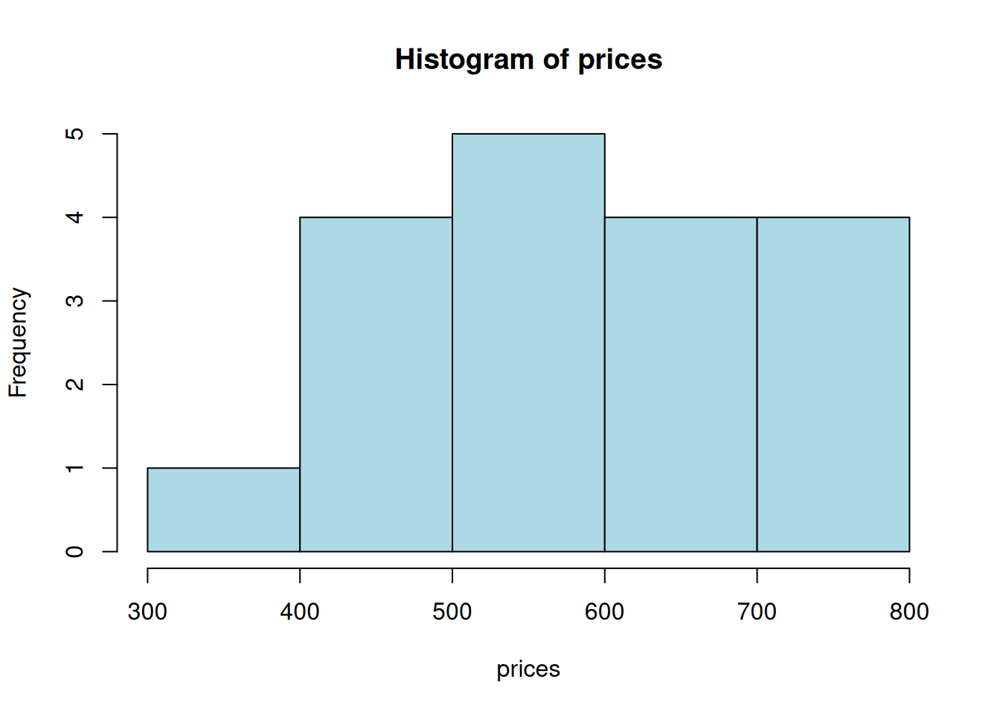

Ch. 1 Descriptive Statistics
Sections covered: all
1.1 Populations, Samples, and Processes
To generate a random sample of data, we use the function sample().
Ex: To generate a sample of 6 numbers from the integers between 1 and 20:
sample(x = 1:20, size = 6)## [1] 1 15 7 11 10 2Note: this syntax assumes that there is no replacement (it won’t pick the same number twice). If you want to sample with replacement use the following:
sample(x = 1:20, size = 8, replace = TRUE)## [1] 10 13 11 8 8 1 18 41.2 Pictorial and Tabular Methods in Descriptive Statistics
Skip: Example 1.7, p. 15 (double-digit leaves)
Skip: “Dotplots,” pp. 15-16
- Stem-and-leaf display: Ex: The following are the listing prices (in thousands of $) of one-bedroom apartments in Morningside Heights in 2016: 379, 425, 450, 450, 499, 529, 535, 535, 545, 599, 665, 675, 699, 699, 725, 725, 745, 799 Draw a stem an leaf plot of this data:
- Create a new variable (we’ll cal it “prices”). Note: we always use the syntax <- c() to generate new variables.
prices <- c(379, 425, 450, 450, 499, 529, 535, 535, 545, 599, 665,
675, 699, 699, 725, 725, 745, 799)- Draw a stem and leaf plot
prices <- c(379, 425, 450, 450, 499, 529, 535, 535, 545, 599, 665,
675, 699, 699, 725, 725, 745, 799)
stem(prices)##
## The decimal point is 2 digit(s) to the right of the |
##
## 3 | 8
## 4 | 355
## 5 | 03445
## 6 | 078
## 7 | 00335
## 8 | 0Note that histograms are drawn with unbinned data. R does the binning in the process of drawing the histogram.
- Frequency histogram: If you want to create a frequency histogram of this data you use the following:
prices <- c(379, 425, 450, 450, 499, 529, 535, 535, 545, 599, 665,
675, 699, 699, 725, 725, 745, 799)
hist(prices)Note: histograms are drawn with unbinned data. R does the binning in the process of drawing the histogram. This means that the program chooses the size of the bins for you
To add specific bin sizes and colors to your histogram, you can use the following syntax:
prices <- c(379, 425, 450, 450, 499, 529, 535, 535, 545, 599, 665,
675, 699, 699, 725, 725, 745, 799)
hist(prices, breaks = c(300, 400, 500, 600, 700, 800),
col = "lightblue")
- Density histogram: We use an almost identical syntax to generate density histograms, but add a condition (freq=FALSE):
prices <- c(379, 425, 450, 450, 499, 529, 535, 535, 545, 599, 665,
675, 699, 699, 725, 725, 745, 799)
hist(prices, freq = FALSE,
breaks = c(300, 400, 500, 600, 700, 800),
col = "lightblue", las = 1)
Cumulative frequency histogram
For this type of histogram, we need access to the bin counts, in order to calculate the cumulative frequencies. The hist() function returns these values, if assigned to a variable:

myhistdata## $breaks
## [1] 1 2 3 4 5 6 7 8
##
## $counts
## [1] 5 0 0 3 0 2 1
##
## $density
## [1] 0.45454545 0.00000000 0.00000000 0.27272727 0.00000000 0.18181818 0.09090909
##
## $mids
## [1] 1.5 2.5 3.5 4.5 5.5 6.5 7.5
##
## $xname
## [1] "x"
##
## $equidist
## [1] TRUE
##
## attr(,"class")
## [1] "histogram"The particular information we want is $counts:
myhistdata$counts## [1] 5 0 0 3 0 2 1The cumulative frequencies are:
cumsum(myhistdata$counts)## [1] 5 5 5 8 8 10 11To plot them, we need to use a bar chart, not a histogram, since we already have the y-axis values:
Cleaned up:
1.3 Measures of location
Skip: Example 1.16, p. 33 (trimmed mean)
Skip: “Categorical Data and Sample Proportions,” p. 34 (We’ll return to this topic later.)
Consider the same dataset (prices). To find the mean, median, quartiles, and trimmed mean, we use the following syntax:
prices <- c(379, 425, 450, 450, 499, 529, 535, 535, 545, 599, 665,
675, 699, 699, 725, 725, 745, 799)
mean(prices)## [1] 593.2222
median(prices)## [1] 572
## quartiles
quantile(prices)## 0% 25% 50% 75% 100%
## 379.0 506.5 572.0 699.0 799.0
## trimmed mean
mean(prices, trim = .1) ## 10% trimmed mean## [1] 593.751.4 Measures of variability
Skip: extreme outliers (p. 42)
We will define outliers for boxplots to be observations that are more than 1.5 times the fourth spread from the closest fourth. They may be indicated with either a solid or open circle (in contrast to the book which uses one for mild outliers and the other for extreme outliers.)
- Sample variance:
prices <- c(379, 425, 450, 450, 499, 529, 535, 535, 545, 599, 665,
675, 699, 699, 725, 725, 745, 799)
var(prices)## [1] 15981.48- Sample standard deviation:
## [1] 126.4179
sd(prices)## [1] 126.4179- Five number summary
(min, lower-hinge, median, upper-hinge, max)
fivenum(prices)## [1] 379 499 572 699 799If you want to generate a horizontal boxplot, use the following
- Boxplots
prices <- c(379, 425, 450, 450, 499, 529, 535, 535, 545,
599, 665, 675, 699, 699, 725, 725, 745, 799)
boxplot(prices)
boxplot(prices, horizontal = TRUE)(Note: you can also add a color as done below):
boxplot(prices, horizontal = TRUE, col='pink')
Now, to create a comparative boxplot of two datasets, we will create a “dataframe” (2d array with two dataset values). Then, we will create a boxplot from this “joined” dataset.
PTSD <- c(10, 20, 25, 28, 31, 35, 37, 38, 38, 39, 39, 42, 46)
Healthy <- c(23, 39, 40, 41, 43, 47, 51, 58, 63, 66, 67, 69, 72)
df <- data.frame(Healthy, PTSD)
boxplot(df, horizontal = TRUE)Practice Exercises
- Using the built-in dataset
ToothGrowthin R, visualize the data and comment on the effectiveness of different functions in the context.
[Ans]
# The first 5 rows of the data
head(ToothGrowth, 5)## len supp dose
## 1 4.2 VC 0.5
## 2 11.5 VC 0.5
## 3 7.3 VC 0.5
## 4 5.8 VC 0.5
## 5 6.4 VC 0.5
# Five number summary
fivenum(ToothGrowth$len)## [1] 4.20 12.55 19.25 25.35 33.90
# Boxplot
# '$' extracts the column by name
boxplot(ToothGrowth$len) 
# Stem-and-leaf Plot
stem(ToothGrowth$len)##
## The decimal point is 1 digit(s) to the right of the |
##
## 0 | 4
## 0 | 5667789
## 1 | 00001124
## 1 | 55555677777899
## 2 | 001222333344
## 2 | 55566666667779
## 3 | 0134
# Histogram
h <- hist(ToothGrowth$len)
### Syntax explanation
head(): directly see how the dataset looks; useful when the dataset is large and it’s difficult to display all rows and columns together.
fivenum(): returns the minimum value, lower fourth, median, upper fourth, and maximum value
boxplot(): visualizes the five number summary plus outliers. (It’s clear that the ToothGrowth data is not skewed.)
stem(): compares the number of data points that fall in different bins. (Here we can see that most values are between 20 and 29.)
hist(): draws a histogram – values are grouped in bins
cumsum(): takes a vector and returns the cumulative sums